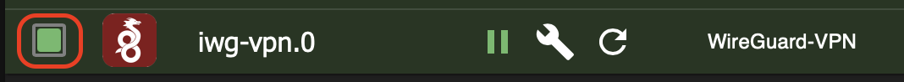
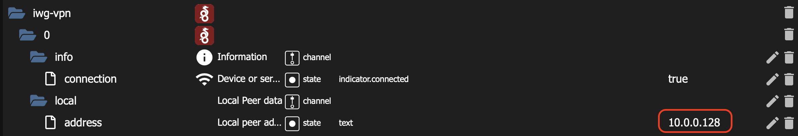
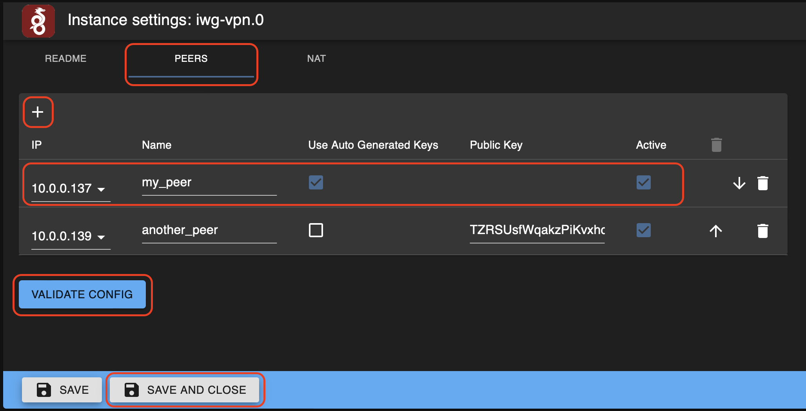
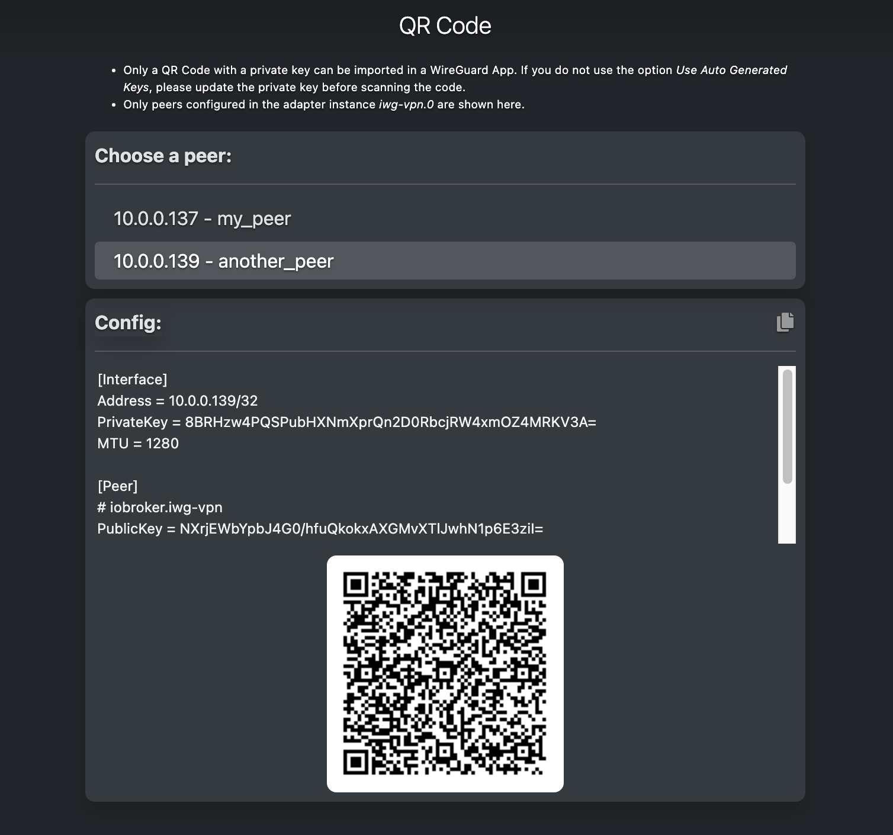
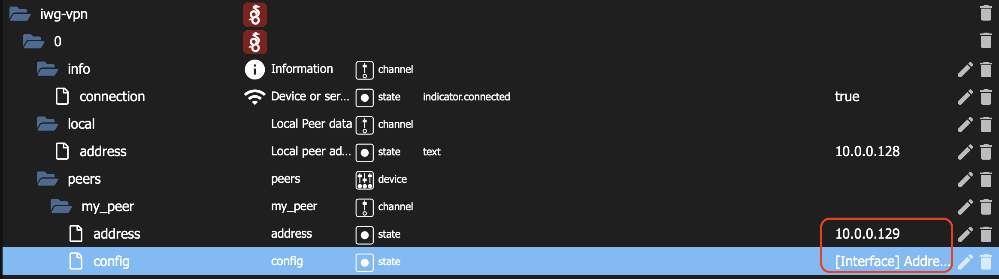
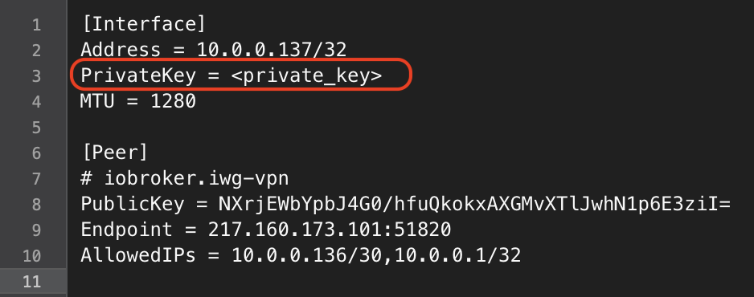
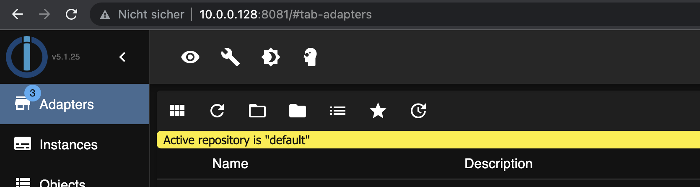
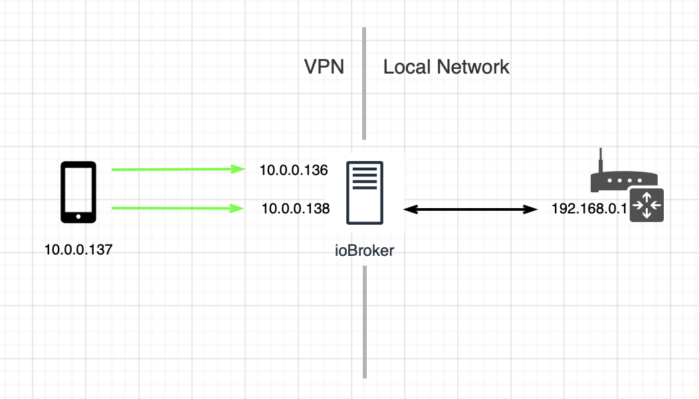
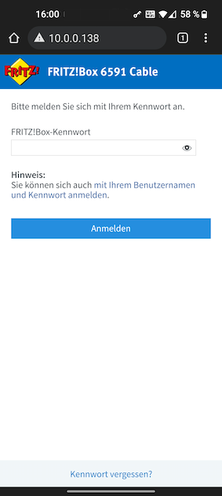

WireGuard is a registered trademark of Jason A. Donenfeld. (https://www.wireguard.com/)
Recently added
- Remote access support for ioBroker windows hosts
- Peer configuration as QR Code to import into a WireGuard App on a mobile peer. Show me how!
- Auto generation of key pairs for configured peers. Follow me to learn how!
- Information about latest handshake and sent/received bytes via the WireGuard network interface.
- Validate PEERs and NAT configuration before applying.
- NAT Support. Take me right there!
Introduction
WireGuard is a VPN implementation that was recently added to the Linux kernel. It is faster and simpler than other popular VPN implementations like OpenVPN or IPsec.
This adapter helps to easily set up an own Wireguard-based VPN and connect to a local ioBroker and local network from everwhere and any remote device. And all this can be done just in a minute.
Please be aware that at the moment the adapter is supported on Linux hosts only. If you run ioBroker on a Windows machine watch out for upcoming releases.
Overview
To set up a VPN, we need at least two devices that we want to connect. One of these is the device hosting the ioBroker. The other device could be a smartphone or a computer on another local network.

None of the devices is required to have a public IP address or to be reachable from the internet. No ports are required to be opened on your local network router. But, to be able to connect to each other via the VPN, the devices have to be properly set up.
Adding the adapter to ioBroker
$ cd /opt/iobroker
$ sudo npm i iobroker.iwg-vpn
$ sudo add iwg-vpnInstalling Wireguard
Every device on the VPN must have the WireGuard installed. You can install WireGuard on your ioBroker host manually following the instructions on the official WireGuard Installation page. Alternativelly, you can run a shell script which will simplify the installation and make your life easier.
To install the WireGuard using the script, open the shell and exeute the commands:
$ cd /opt/iobroker
$ sudo bash node_modules/iobroker.iwg-vpn/scripts/iwg-install.shGranting permissions to ioBroker
The WireGuard package installs two binaries:
-
wg— a tool for managing configuration of WireGuard interfaces -
wg-quick— a convenience script for easily starting and stopping WireGuard interfaces
To be able to set up the WireGuard network interface, the ioBroker needs to execute WireGuard's
wg and wg-quick commands with elevated privileges. Exactly the same way as today the ioBroker configured to execute commands like systemctl start or apt-get without providing
the sudo password, we have to add to this configuration the commands required to manage WireGuard interface.
You can add these commands manually via, e.g., touching a file under
/etc/sudoers.d/ and configuring it using visudo or you can run the script that will do it for you. To make the configuration via the script open the shell and execute the commands:
$ cd /opt/iobroker
$ sudo bash node_modules/iobroker.iwg-vpn/scripts/iwg-config.shioBroker Configuration
This is the easiest part. The iobroker.iwg-vpn adapter automatically creates a configuration at start up. To verify that everything works as expected check the adapter connection status:

Once connected, the adapter gets a private IP address and assigns it to the local WireGuard network interface. Starting from this point the ioBroker host is reachable in VPN under this IP address. You can always see the private IP address of your ioBroker
host in the Objects screen of the ioBroker:

Setting up peers
Let's call the other devices on your VPN peers. The ioBroker host and the peers are devices on the same VPN.
Once configured, the adapter not only gets its own IP address, it also gets 3 additional IP addresses to be used by peers or for NAT configuration (3 additional IP addresses is a soft limit that can be increased upon a request). Before adding a peer to your VPN you have to install the WireGuard package or the WireGuard app also on this peer. For connecting individual devices to a network via VPN, there are apps or programs from WireGuard itself for most operating systems. Please follow the instructions on the official WireGuard Installation page matching to the operating system of the peer. If your peer running a Linux, you can use the same installation script as for the ioBroker host.
To encrypt and decrypt network packets, we need keys. Once the WireGuard is installed on a peer, the key paar has to be generated. The private key will be used to decrypt incomming network packets and must be never revealed. The public key will be used to encrypt the network packets sent towards the peer. The encrypted with a public key network packets can be only decrypted using the private key from the same key pair.
The adapter can generate a key pair for a peer automatically or you can do it manually. In case of automatically generated keys the private key will never leave the iBroker host and will be only used to create a complete configuration for a peer. The prepared configuration can be then manually applied on a peer or scanned as a QR Code using a WireGuard app. If you create keys manually you have to add the private key to a prepared configuration before applying it on a peer.
If you would like the adapter to generate keys for your peers you can jump directly to the next chapter. For manual key generation, continue reading.
Please use the installed app on a mobile device (peer) to manually generate the key pair. On a peer running Linux use the commands:
$ sudo su
$ cd /etc/wireguard/
$ wg genkey | tee privatekey | wg pubkey > publickey
The last command will create the keys, store them in privatekey and
publickey files and print the publickey to stdout. You will need both keys later for configuration, so print also the content of the privatekey file to stdout:
$ cat privatekeyAdding peers
To add a peer open the adapter configuration and click on PEERS, then
+ to add a new row in the table and provide the required details:

-
IP— The IP address you'd like to assign to the peer. The IP can be selected from a list of addresses in your VPN. -
Name— The name of the peer. Can be freely chosen. -
Use Auto Generated Keys— Enabling this option will cause the adapter to generate a key pair for the peer. The private key will never leave the ioBroker host and will be only used to generate a complete, ready to apply configuration file. If you enable this option, you also don't require to provide a public key for the peer. -
Public Key— The public key of the generated on the peer key pair. It will be used for network traffic encryption. It's only required to provide a public key if you generating a key pair manually. -
Active— Only active peers are really available on VPN. You can configure more peers than VPN IP addresses available, but only active ones with unique IP addresses will be added to your VPN. By switching this property on and off you can add or remove a preconfigured peer to/from your VPN.
Once you're finished adding peers, hit the VALIDATE CONFIG button to perform a sanity check. If you don't see any validation errors displayed, hit the SAVE AND CLOSE button to apply your configuration
and restart the adapter.
Applying prepared configuration on a peer
Now it's time for the peers to join your VPN. If everything went well, the adapter has already created a config for every active peer.
First of all, I'd like to state here that due to the limited ioBroker adapter configuration possibilities or my inability to use them, no elegant solution to present a peer configuration came into my mind. Instead, I had to switch to an option of using another adapter for this purpose. In case you know how to do it in a more easy and user-friendly way please give me a hint, just drop me an e-mail. Every advice or help is welcome and highly appreciated. To cut a long story short, you can apply a configuration on a peer manually or by scanning a generated QR Code.
Applying configuration by scanning a QR Code
As mentioned, here another ioBroker adapter needs to be added (if not done yet) — ioBroker.web adapter with activated built-in Simple-API:

Once this done, an"instance link" action button to the rigth of the iwg-vpn.0 adapter instance name appears. Hit this button.
Note:
On some iobroker installations I saw an effect of the instance link button not showing up. If you experience the same issue, just navigate to the following URL to open the page:
http://<your-iobroker-ip>:<web-adapter-port>/iwg-vpn/index.html.
E.g., with default settings the URL is: http://127.0.0.1:8082/iwg-vpn/index.html
In case you know how to get rid of this issue, please let me know.
This will open a screen where you can select a peer and display the prepared VPN configuration as text and as QR-Code. Use your WireGuard app installed on a peer to scan the QR-Code and to apply the configuration.

Please note, that a configuration with no or invalid private key cannot be imported. So to import a configuration for the peers with the Use Auto Generated Keys option deactivated, first replace the placeholder <private_key> with the real private key generated on the peer and then scan the code. The QR Code updates itself automatically on every change made in the text above the QR Code.
Applying configuration manually
To apply the configuration manually just copy the displayed text shown above the QR Code and put it on a peer. Here again, replace the private keys placeholder with the real key for peers you've generated key pairs on your own. If
you don't have the ioBroker.web adapter installed and don't want to install it, you can still access the configuration text via the Objects screen. Open the Objects screen in the ioBroker, find the
iwg-vpn section and your active peers. Every peer object has an
address state containing the assigned private IP address and the
config state with prepared configuration.

Copy the configuration string and paste it into a text editor. If you generated the keys manually, replace the placeholder <private_key> with your peer's private key and place the whole content as a config on a peer.
If you used the
Use Auto Generated Keys option, the private key is already included and you just have to apply the configuration on the peer.

To apply a configuration on a Linux peer create a file containing the configuration at
/etc/wireguard/wg0.conf. For a mobile device with a WireGuard app installed use the app to apply the configuration, e.g., on an Android device, it looks like this:

Having the WireGuard installed and configuration file created, the VPN interface can be started on a peer. To start/stop the WireGuard on the mobile peer use the installed app, on a Linux peer you can use the command:
$ wg-quick up wg0to start and
$ wg-quick down wg0to stop the WireGuard interface.
Connecting
Everything is set up and you're ready to go! Open your favorite browser on a peer and navigate to the ioBroker via the VPN using the ioBroker's private IP address:

NAT
Note:
NAT is not supported for ioBroker windows hosts yet
The adapter supports NAT (Network Address Translation) or more precisely 1:1 NAT that maps one internal address (in a local network) to one external address (in VPN). The figure below shows an example of
a NAT configuration. The network interface on ioBroker host has got 2 VPN addresses assigned: 10.0.0.136 and 10.0.0.138. The VPN address 10.0.0.138 is configured to forward the incomming
traffic to a device in the local network having the internal IP 192.168.0.1. With this configuration a peer with VPN IP address 10.0.0.137 is able to access the ioBroker host under VPN IP 10.0.0.136 and the local network device under the VPN IP address 10.0.0.138:

The VPN addresses the adapter gets can be configured either to be used as peer addresses or as addresses mapped to local network devices. The must be no overlap, i.e. a VPN IP address of an active peer cannot be used as a NAT IP address and vice versa.
NAT Configuration
The NAT configuration is very simple and similar to the Peers configuration. Open the adapter configuration, click on NAT, then + to add a new row in the table and provide the required details:

-
Source IP— The VPN IP address you'd like to map to a device in the local network. The IP can be selected from a drop-down list of addresses in your VPN. -
Destination IP— The IP of a device in the local network you'd like to access from your VPN peers. -
Active— Only active NAT configurations are really available on VPN. You can have more NAT configurations than VPN IP addresses available, e.g., by creating multiple NAT configurations for the sameSource IP, but only active ones with unique IP addresses will be added to your VPN. By switching this property on and off you can add or remove a predefined NAT configuration to/from your VPN.
Hit the VALIDATE CONFIG and then SAVE AND CLOSE button to apply your configuration.
Once the NAT is configured the devices in the local network can be accessed in exactly the same way as the ioBroker host. Just navigate on your peer to the as NAT configured VPN Source IP address:

What else?
If you're asking youself what else you can do using this adapter, well... pretty much everything you can do also locally with your ioBroker installation. Here's a couple of examples.
Getting and Setting states
First of all, with Simple-API activated in ioBroker (if you're using the feature of generating a configuration as a QR-Code, then it's already activated) you can read and write any states in exactly the same way as you would do it also with ioBroker.cloud adapter and iobroker.pro account. The only difference is that you would use the ioBroker VPN address in this case and not the iobroker.pro cloud. And as a side effect: no iobroker.pro account needed and it's for free :). For
example, if your iobroker.web is listenning on port 8082, then getting a state object is as simple as:
GET http://10.0.0.136:8082/get/<state_id>Replace the <state_id> with the ID of a state you're interested in, e.g.,
admin.0.info.lastUpdateCheck, and you'll get as a response something like:
{
"val":1646429215353,
"ack":true,
"ts":1587296099233,
"q":0,
"from":"system.adapter.admin.0",
"user":"system.user.admin",
"lc":1646429215360,
"_id":"admin.0.info.lastUpdateCheck",
"type":"state",
"common":{"role":"value.time","name":"Timestamp of last update check","type":"number","read":true,"write":false,"def":""},
"native":{},
"acl":{"object":1636,"state":1636,"owner":"system.user.admin","ownerGroup":"system.group.administrator"}
}To read just a value itself, use
GET http://10.0.0.136:8082/getPlainValue/admin.0.info.lastUpdateCheckResponse:
1646429215353To write a value use
GET http://10.0.0.136:8082/set/<state_id>?value=1Response:
{"result":"OK"}Text2Command
If you're using the ioBroker.text2command adapter, then sending a remote command is just setting the text state of the adapter instance, e.g., to send the what time is it now? command:
curl 10.0.0.136:8082/set/text2command.0.text?value=what%20time%20is%20it%20now? If you're using
curl to send an HTTP request don't forget to replace blanks in your command text with %20. To get the command's response, just read the adapter's
response state:
curl 10.0.0.136:8082/getPlainValue/text2command.0.responseSome words about security
Security is an important aspect of any communication in generall and in this case even especially important. Please be aware that this adapter helps you to set up a communication channel and easily manage the WireGuard interface, but doesn't participate in the communication itself. The entire communication is handled by the WireGuard. You can refer for the detailed description of how everything works and how the security is ensured to the WireGuard whitepaper.
No ports on your router have to be opened for the VPN to work. No port forwarding on your router has to be set up. You are not required to assign a static public IP to your router or setup a dynamic DNS.
You always control your VPN. Deleting all the peers or having no active peers configured makes your ioBroker host unreachable under the VPN address. Stopping the adapter will stop the WireGuard and remove the WireGuard network interface entirely.
Alternatives
Disclaimer:
This comparison doesn't claim to be neither correct nor complete. The considered information about the alternatives was limited to the publicly available only and some statements and conclusions provided below
might be wrong.
Neither performance nor throuput via the different solutions were measured, instead assumptions based on the pure theory of physics were made, that nevetheless were pretty much confirmed by non-scientific tests :)
There are different ways to connect to a ioBroker host from outside of the local network. There are solutions where you can setup everything manually by, e.g., exposing your router or even the ioBroker host itself to the Internet or runnung a WireGuard server inside your local network and accepting connections from outside. If you do something similar, then you're probably a network expert and this adapter is of no value to you.
If you don't feel comfortable setting everything up on your own and exposing your local network to the Internet by following some instructions from the Internet, then you're probably looking for a solution which takes the configuration burden, easy to
use and secure at the same time. At the moment there are two alternatives available which are comparable to the ioBroker.iwg-vpn: ioBoker.link and ioBroker.cloud.
So let's take a look at the commonalities and differences between those and let me know if I missed another one :).
Features
ioBroker.link is a solution allowing to access the ioBroker host via a Browser. You required to create an account and use a Web-Application hosted on a relay server in Internet to establish a connection to your
ioBroker host. Only HTTP connections can be established this way. UDP, TCP or HTTPs connections are not supported. Enabled ioBroker authentication is not supported as well.
There is an additional package ioBroker.link-box which can be installed on a machine and allows to create a UDP/TCP connections to ioBroker host and devices in the ioBroker's local network. As it's a NodeJs application
and uses port forwarding from local machine via relay server to and via ioBroker host to a target device it's not really useable on mobile devices. ioBroker.link supports any operating systems for accessing via a Browser and
Linux and Windows in case of ioBroker.link-box.
All ioBroker.link connections are limited in time.
ioBroker.cloud allows to connect through the ioBroker cloud to a local installation of ioBroker via a Browser. You need an account and have to use a Web-Application hosted on a relay server to establish a connection.
It also supports sending commands to ioBroker or reading adapters' states via API. Only HTTP connections are supported.
ioBroker.iwg-vpn allows UDP, TCP and HTTPs connections to the host running the ioBroker and to any device in the ioBroker host's local network. No account needed. No time limits. To establish a connection a WireGuard
package/app/program has to be installed on a device. It also works with enabled ioBroker authentication. Currently the host running the ioBroker has to be a Linux host.
Behind the scenes
For connections initiated from the Web-Application on a relay server, the ioBroker.link seems to use a forwarding of a traffic from an account specific subdomain to a local ioBroker installation via a reverse SSH
tunnel. The SSH tunnel is established as soon as the ioBroker.link adapter recognizes a request to establish a connection. This happens by polling the relay server. The things become complicated in case of TCP or UDP connections
via the ioBroker.link-box. Looking at the dependencies and npm scripts it seems that the ioBroker.link-box connects to the relay server using the TCP-over-HTTPs tunnel for TCP connections and the
SSF for UDP connections.
ioBroker.cloud connection is a permanent Web-Sockets connection between ioBroker local installation and a relay server.
In case of ioBroker.iwg-vpn the entire network communication is handled by WireGuard that uses encrypted UDP packets for this purpose.
Performance
ioBroker.link seems to implement an account subdomain to ioBroker host forwarding on the relay server in the application layer. That seems to be also the cause for not supporting HTTPs and enabled ioBroker authentication.
It means an overhead of routing network packets from the kernel space to the user space and then forwarding them to a local port of an established reverse SSH tunnel. On the ioBroker host the same thing happens againg, the
routing is implemented in the adapter itself using npm http-proxy package, so that all the traffic forwarder to the user space before being sent further to the final destination.
As expected, it becomes much more complex and less performant if ioBroker.link-box is used. For example in case of a TCP communication, the raw TCP network packets are packed into HTTP packets and sent to the relay
server, where they are extracted and forwarded to a port of an established reverse SSH tunnel. Arriving at the ioBroker host, they go all the way from the kernel space, via the user space, back to the kernel space before being
sent to a final destination. For UDP, as mentioned, the SSF is used claiming to be
much faster than SSH, but also here, due to a bunch of another things on a packet way to its destination, the performance is rather poor.
There is not much to say regarding ioBroker.cloud as its only supports Web-Sockets over HTTP. Here is the performance"as expected".
ioBroker.iwg-vpn doesn't intervene into the communication, so the performace is equal to the
WireGuard native performance.
Maintenance
ioBroker.link seems to be not really maintained. The last commit is from 3 Oct 2021 which just fixes the type of the adapter's indicator.connection state. The second latest commit is from
9 Dec 2020 which aims to ignore errors being logged in adapter in case of relay server reboot. Much worse is the situation with ioBroker.link-box with the latest commit from 10 Mar 2019.
Also the underlying SSF package seems to be abandoned with the latest commit from 13 Nov 2017.
ioBroker.cloud is maintaned as it seems to generate the most profit.
Open/Closed Source
ioBroker.link is completelly closed source. Neither the adapter, nor link-box, nor the relay server code is available.
ioBroker.cloud and ioBroker.iwg-vpn adapters' code is open.
Costs
ioBroker.iwg-vpn is free of charge. The two others — not.
Support
In case you have a question or missing a feature feel free to contact iwg.vpn@gmail.com